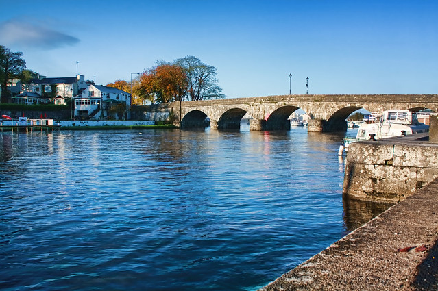
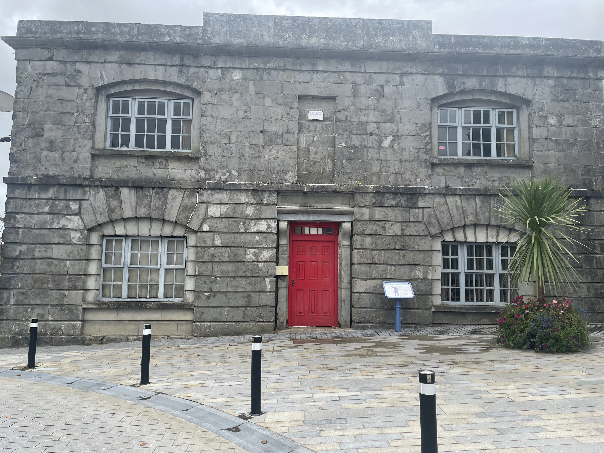
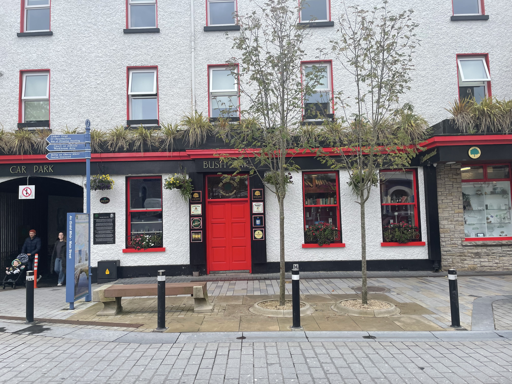
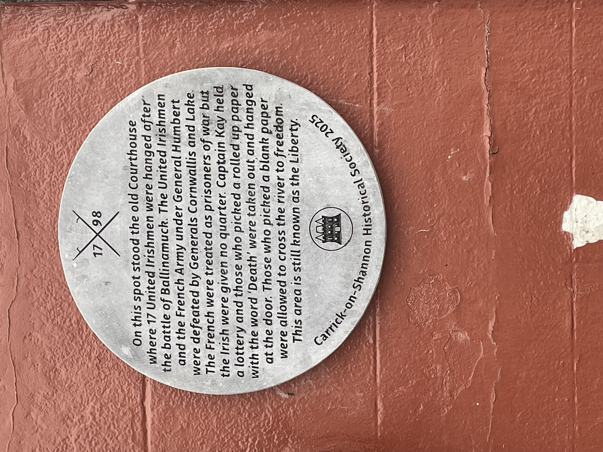
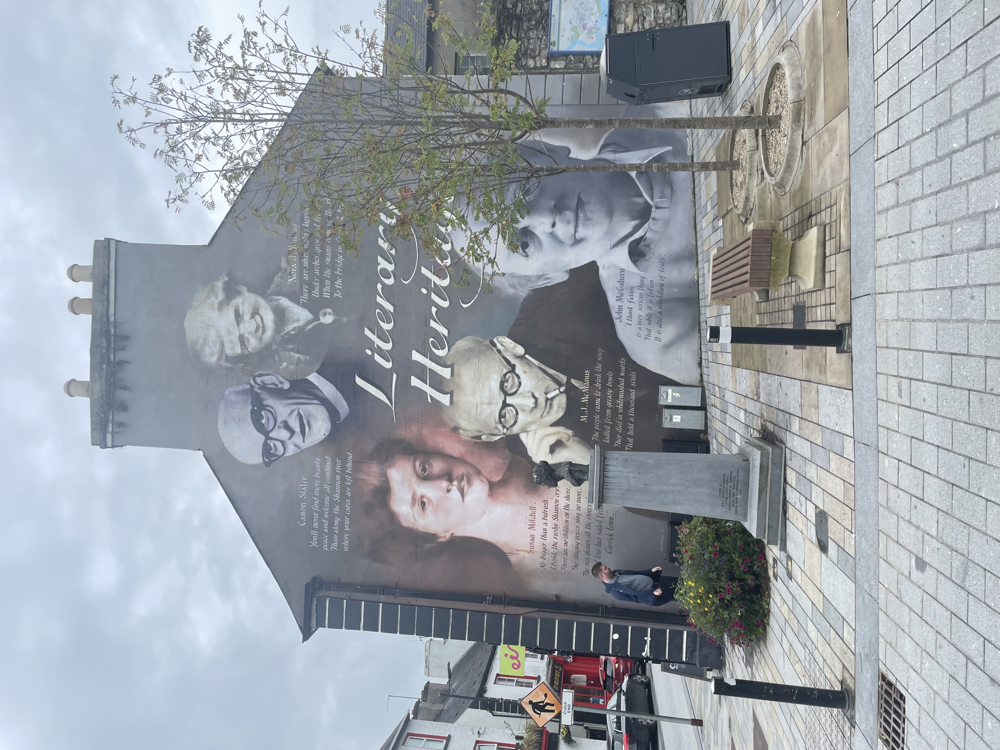

THE TRUTH OF SHEEMORE
The Carrick-on-Shannon Robert Keon knew has largely disappeared. The courthouse, gaol and streets associated with the events of 1786 have been rebuilt or replaced over the centuries.
But the town remains at the heart of the story. It was here that Robert struck George Nugent Reynolds with his cane at the September assizes. Here reputations were made and damaged, and here the consequences of what happened on Sheemore Hill returned to court.
These photographs show Carrick as it is today. The buildings have changed, but the Shannon, the streets and the shape of the town still give a sense of the place in which the story unfolded.

The River Shannon and bridge at Carrick-on-Shannon.

Carrick-on-Shannon retains traces of its long legal and administrative history, although the buildings Robert Keon knew have not survived.

The Bush Hotel and streetscape in the centre of Carrick-on-Shannon.

A plaque recalling the old courthouse and the events of 1798, another reminder of Carrick's long association with law and political conflict.

Carrick-on-Shannon continues to celebrate its literary and storytelling traditions.